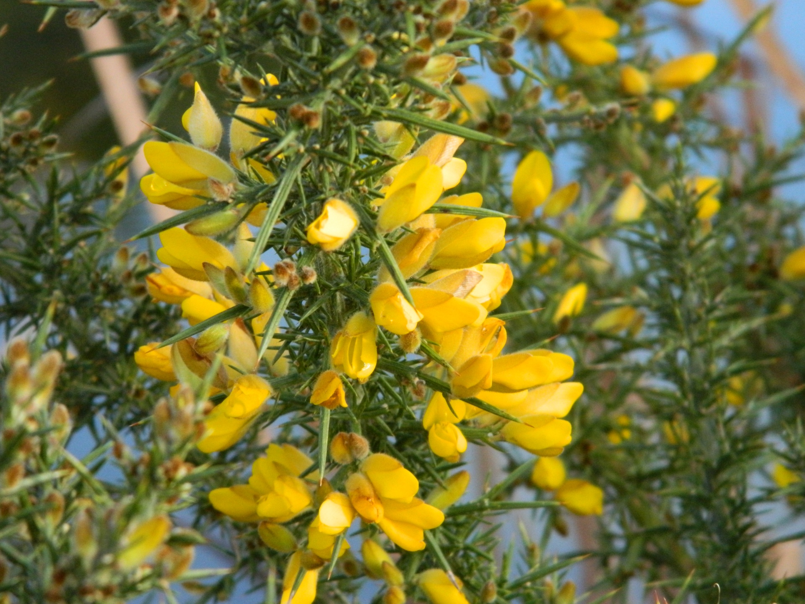
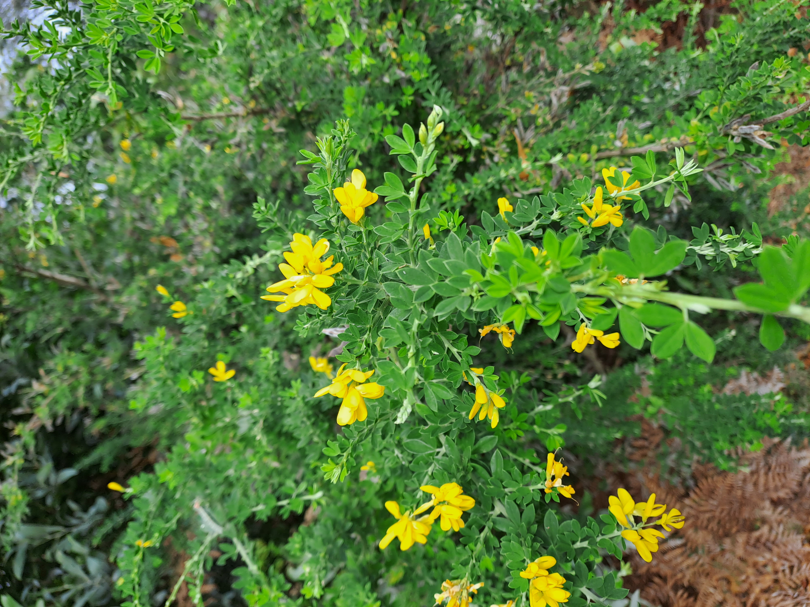
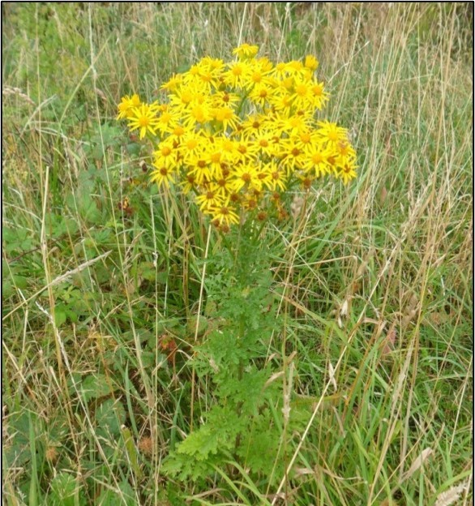
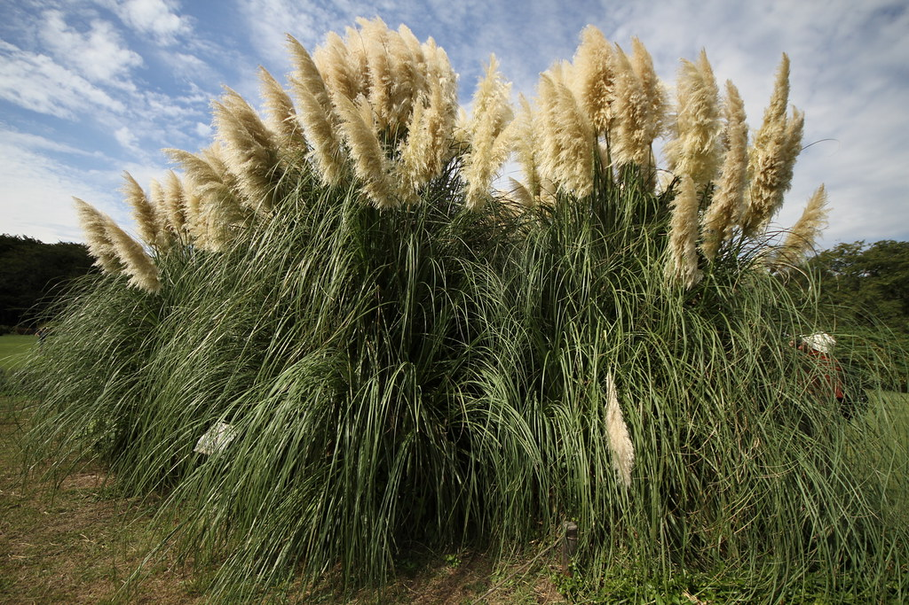
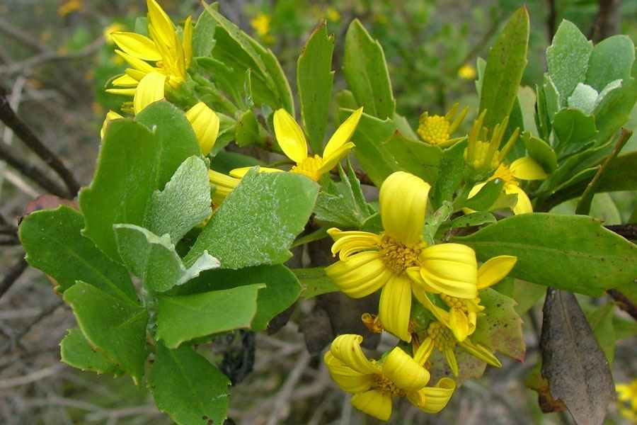
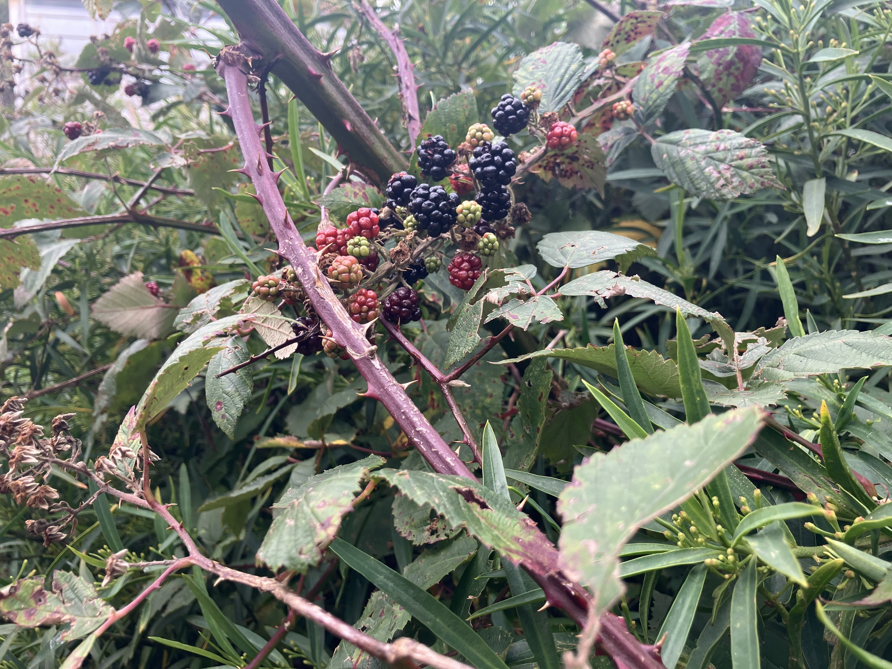
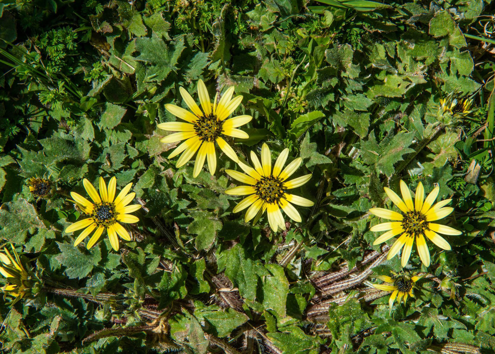
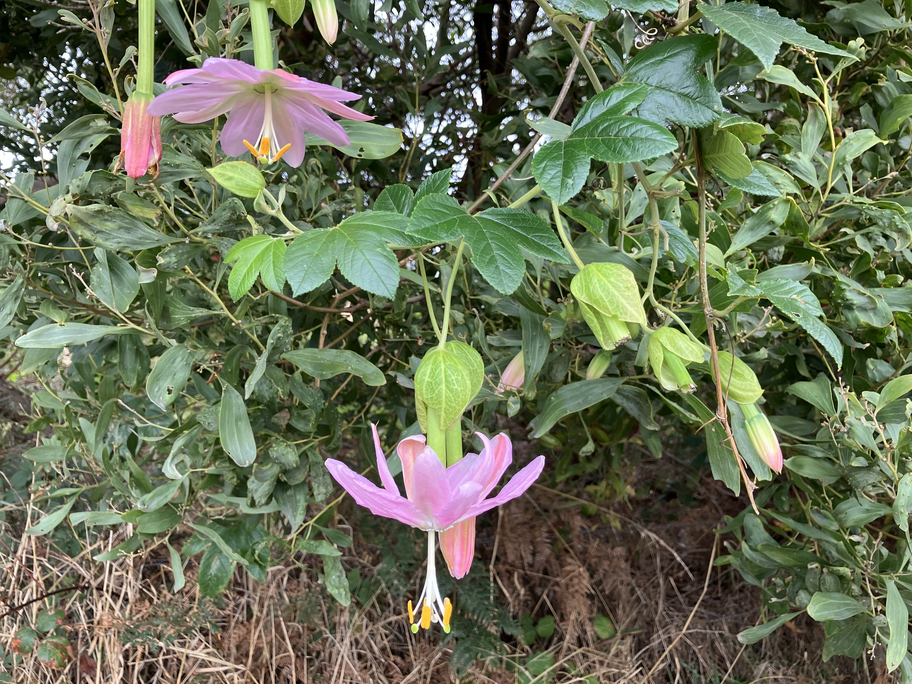
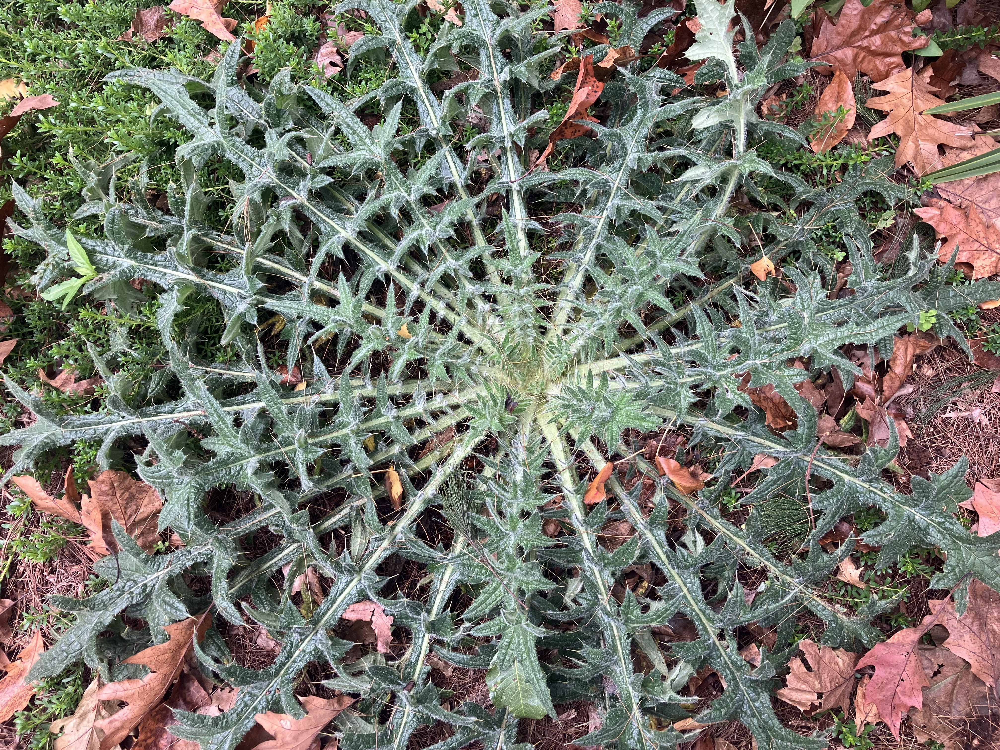

Control Weeds · Tasmanian Learning Resource
This is not a reference. This is judgement training. For each concept, predict what happens before revealing the answer. Learning happens in the gap between expectation and reality.
Foundations · How weed management actually works
This isn't a reference. This is your mental model. Understand these concepts first, then every scenario in this app will make sense.
🌱 What is a weed? (Tasmanian context)
Not just "a bad plant". A weed is any plant that requires active management to prevent spread, economic loss, or environmental harm.
Opportunistic vs competitive: Weeds are opportunists. They don't win fair fights. They win when native vegetation is damaged, removed, or stressed. Your job = close the gap.
🔁 The weed management cycle
This is not "spray and walk away". This is the loop you must internalise.
Read field signals
Scale, species, context
Method, timing, follow-up
Execute at right time
Did it work?
Change what failed
🌾 Why weeds win (understand this, win more)
Fire, grading, flood, overgrazing — all create bare ground. Weeds germinate first. Native regeneration needs help.
Visible weeds are 5% of the problem. The other 95% is underground. Gorse seeds last 30-40 years in Tasmanian soil.
Weeds win when nothing else is growing. Revegetation is control.
You spray when it's convenient. Weeds grow when conditions suit them. If those don't align, you lose.
🧠 Mental models for using this app
Every scenario in this app tests one or more of these. Memorise them.
- ⚡ Disturbance = recruitment trigger — Any soil/vegetation disturbance will germinate weeds. Plan for it.
- 📦 Seedbank > visible plants — What you see is the tip of the iceberg. Treat the soil's memory.
- ⏱️ Timing > method — The right chemical at the wrong time fails. The wrong chemical at the right time also fails. Both matter, timing more.
- 🛡️ Prevention > control — Stopping spread costs $1. Fixing infestation costs $100. Act early.
Weed ecology · Cause → Effect → Response (Tasmanian Context)
What is a weed? (Tasmanian definition)
Under the Biosecurity Act 2019 (Tasmania), a weed is any plant that requires active management to prevent spread, economic loss, or environmental harm. Weeds are context-dependent — a plant may be a weed in the Tasmanian Wilderness World Heritage Area but not in a pasture. Impact > origin.
Types in Tasmania: Declared weeds (legally enforceable control), environmental weeds (threaten native ecosystems), agricultural weeds (reduce pasture/crop productivity).
Failure cases · Predict before you read (Tasmanian Examples)
Correct: Delay until active growth. Use cut stump or basal bark in winter if control is urgent.
Correct: Never slash after seed set. Spot spray with fluproponate or glyphosate BEFORE seed heads emerge (late winter/early spring).
Correct: Check rainfast window on the product label (typically 2–24 hours depending on formulation). Never spray if rain is expected within that window. Use organosilicone surfactants to improve rainfastness when conditions are marginal.
Seedbank timeline · Why most Tasmanian weed programs fail
The single biggest misunderstanding: Visible weed removal ≠ success. The seedbank is the real enemy. In Tasmanian conditions, seedbanks persist for decades.
Gorse seedbank decline after adult removal (Tasmanian conditions)
Critical insight for Tasmania: Gorse seed remains viable for 30–40+ years in Tasmanian soils, particularly in cooler, moist environments like the Derwent Valley. Most control programs stop at Year 1 or 2 – exactly when germination peaks. That's why reinfestation is guaranteed without 5-7 year follow-up.
Implication: Visible success is deceptive. Follow-up for years is mandatory. NRE Tas recommends 7-10 year programs for gorse.
Field signals · What you actually see in Tasmanian landscapes
Theory is useless if you can't read the landscape. These are diagnostic signs relevant to Tasmanian conditions.
Waxy leaf beading
Water droplets forming spheres, rolling off leaf surface (common on gorse, broom, blackberry in Tasmanian spring). Diagnosis: Poor spray uptake. Response: Add surfactant/wetting agent. NRE Tas recommends organosilicone adjuvants for waxy species.
Red/purple leaf stress
Discoloration, often on margins (frequent in Tasmanian winter on capeweed, thistles). Diagnosis: Drought or cold stress (Tasmania's frost hollows). Response: Plant not actively transporting. Delay systemic herbicide until conditions improve.
Even-aged seedling cohort
Large area of same-size seedlings (common post-flood along Tasmania's Meander River or post-fire in the Huon Valley). Diagnosis: Recent disturbance (fire, grading, flood, wallaby overgrazing). Response: Early intervention window – act now before seed set. This is your cheapest control moment.
Patchy herbicide kill
Uneven death, clusters of survivors. Diagnosis: Application issue (nozzle block, walking speed variation, boom height) OR early resistance. Resistance is emerging in Tasmanian annual ryegrass to glyphosate. Response: Investigate equipment, consider rotating mode of action (MOA) groups. Report suspected resistance to NRE Tas.
Method selection · A reusable thinking framework for Tasmania
Stop memorising methods. Start with these five diagnostic questions under Tasmanian conditions:
1. Is seed present or about to be produced?
YES → STOP SPREAD FIRST. Containment, avoid slashing, bag seed heads. Prevention is cheaper than control. Under Tasmanian law, it's an offence to spread declared weeds.
2. Is the plant actively growing?
YES → systemic herbicides effective. NO (drought, frost, dormancy in Tasmanian winter) → delay or switch to mechanical (cut stump, basal bark).
3. Is the site environmentally sensitive?
Near Tasmanian waterways, Tasmanian Wilderness World Heritage Area, threatened species habitat, cultural site? → Non-chemical methods first. If chemical required, aquatic-registered only (check APVMA permits).
4. Is the infestation large or small?
Small (<0.1ha) → hand pull, spot spray. Large → prioritise edges, containment zones. Don't treat everything at once. Work from high-value areas outward.
5. What is the follow-up plan?
NO FOLLOW-UP PLAN = ACCEPT FAILURE. Schedule Year 2, 3, 5, 7 before you start. NRE Tas requires follow-up records for declared weed control programs.
Planning & Monitoring · Whole-program thinking
Success isn't one treatment. It's a 5-7 year program. Here's how to plan one.
📋 Simple planning structure
📊 What success looks like (Tasmanian timelines)
🔴 What failure looks like
- Same species returns at same density within 2 years
- Patchy kill with consistent pattern (suspect resistance)
- You treated without a follow-up schedule
- Seed set occurred before treatment
Tasmanian Weed Library · Identification & Resources
Declared Weed (Tasmania) = Legally required to control under Biosecurity Act 2019 · Environmental Weed = Threat to native Tasmanian ecosystems
For current control methods and herbicide recommendations, follow the NRE Tas links below each weed.

Gorse (Ulex europaeus)
Key ID: Dense spiny shrub, bright yellow pea-flowers (mainly late winter–spring, can flower year-round), explosive seed pods.
Habitat: Widespread across Tasmania — pasture, roadsides, bushland, coastal areas.
NRE Tas control guide
Montpelier Broom (Genista monspessulana)
Key ID: Upright shrub with soft green trifoliate leaves, yellow pea-flowers (late winter–spring), flat hairy seed pods.
Habitat: Widespread in southern Tasmania — bushland, roadsides, disturbed areas, coastal heath.
NRE Tas control guide
Ragwort (Jacobaea vulgaris)
Key ID: Erect herb with deeply lobed leaves, bright yellow daisy flowers (summer), toxic to livestock.
Habitat: Pasture, roadsides, and disturbed areas across Tasmania.
NRE Tas control guide
Pampas Grass (Cortaderia selloana)
Key ID: Large tussock grass with sharp-edged leaves, tall fluffy white/pink plumes (late summer–autumn), grows 2–4+ m tall.
Habitat: Coastal areas, roadsides, cliffs, and disturbed or logged areas.
NRE Tas control guide
Boneseed (Chrysanthemoides monilifera)
Key ID: Woody shrub with toothed leaves, yellow daisy flowers (late winter–spring), fleshy black berries.
Habitat: Coastal areas (east coast to Bruny Island), bushland and roadsides.
NRE Tas control guide
Blackberry (Rubus fruticosus agg.)
Key ID: Prickly arching canes, white/pink flowers (late spring–summer), black berries (summer–early autumn).
Habitat: Widespread — creeksides, pasture, roadsides, and bushland edges.
NRE Tas control guide
Capeweed (Arctotheca calendula)
Key ID: Low-growing rosette with silver-grey lobed leaves, yellow daisy flowers with dark centre (winter–spring).
Habitat: Common in pasture, roadsides, and disturbed areas across Tasmania.
NRE Tas profile
Banana Passionfruit (Passiflora tripartita var. mollissima)
Key ID: Vigorous climbing vine, pink tubular flowers, yellow banana-shaped fruit, velvety leaves.
Habitat: Wet forests, gullies, and rainforest edges (especially southern and western Tasmania).
NRE Tas profile
Spear Thistle (Cirsium vulgare)
Key ID: Spiny upright thistle with winged stems, deeply lobed leaves, purple flower heads (summer).
Habitat: Pasture, roadsides, and disturbed areas across Tasmania.
Weeds Australia profile
Cotoneaster (Cotoneaster glaucophyllus)
Key ID: Evergreen shrub with glossy leaves, small white/pink flowers (spring), red berries (autumn–winter), bird-dispersed.
Habitat: Bushland, rocky outcrops, and roadsides.
NRE Tas profile
Mirror Bush (Coprosma repens)
Key ID: Dense shrub with very glossy dark green leaves, orange-red berries (autumn).
Habitat: Coastal areas, roadsides, and bushland edges in Tasmania.
NRE Tas profile
Sweet Pittosporum (Pittosporum undulatum)
Key ID: Small tree with dark green wavy leaves, cream fragrant flowers (spring–early summer), orange berries with sticky seeds.
Habitat: Wet forests, gullies, and urban bushland across Tasmania.
NRE Tas profileTasmanian Seasonal Treatment Calendar
Use this as a quick reference for Tasmanian conditions. Always verify current control windows with NRE Tas guidelines.
| Weed | Summer (Dec-Feb) | Autumn (Mar-May) | Winter (Jun-Aug) | Spring (Sep-Nov) |
|---|---|---|---|---|
| Gorse | ⚠️ Possible flowering / monitor | ✅ Best cut stump | ✅ Cut stump / basal bark | ⚠️ Peak flowering (timing critical) |
| Montpelier Broom | ⚠️ Seed set | ✅ Spray seedlings | ✅ Hand pull / treat seedlings | ⚠️ Flowering |
| Ragwort | ⚠️ Flowering | ✅ Treat rosettes | ✅ Treat rosettes | ⚠️ Bolting |
| Pampas Grass | ⚠️ Active growth | ✅ Cut & paint (plumes present) | ✅ Cut & paint | ⚠️ Rapid growth |
| Boneseed | ⚠️ Berry spread | ✅ Spray seedlings | ✅ Manual removal | ⚠️ Flowering / early seed set |
| Blackberry | ⚠️ Fruiting | ✅ Best foliar spray | ⚠️ Limited (cut stump only) | ⚠️ Flowering |
| Spear Thistle | ⚠️ Flowering / seed set | ✅ Treat rosettes | ✅ Treat rosettes | ⚠️ Bolting |
| ✅ Best window (Tasmanian conditions) · ⚠️ Timing or method critical · ❌ Avoid only when seed spread risk or ineffective | ||||
Tasmanian Safety & Legal Guidelines
These links direct you to official Tasmanian Government guidelines. You are legally required to follow these under the Biosecurity Act 2019 (Tasmania).
Ground Spraying Guidelines (TAS)
Calibration, nozzle selection, drift management, record keeping for Tasmanian conditions.
nre.tas.gov.au →Herbicide Use Near Waterways (TAS)
Buffer zones, aquatic-registered chemicals, erosion control in Tasmanian catchments.
nre.tas.gov.au →Vehicle Wash-Down Guidelines (TAS)
Clean-down procedures to prevent weed spread between Tasmanian sites. Legal requirement under Biosecurity Act.
nre.tas.gov.au →Legal Responsibilities in Tasmania
Biosecurity Act 2019 (Tasmania)
Declared weeds must be controlled on your land. It is an offence to propagate, spread, or sell declared weeds. The Tasmanian government can issue biosecurity directions, compliance notices, and penalties for non-compliance. Environmental weeds are not always declared under legislation, but may still require control under land management responsibilities, local council by-laws, or conservation agreements.
Record Keeping (Tasmanian Requirements)
For commercial operators: Keep records of herbicide usage (product, rate, date, location, weather conditions, permit numbers) for at least 3 years. Required for chemical user permits and under the Agricultural and Veterinary Chemicals Code (Tasmania) Regulations.
Test Your Judgement
Answer these questions to check your understanding. Your progress is saved automatically.
Tasmanian Reference Links · Key Resources
Bookmark these Tasmanian websites for current weed information and control guidelines.
NRE Tas · Weeds Index
Tasmanian Government weed information, declared weed lists, control guides, and Biosecurity Act requirements.
nre.tas.gov.au/weeds →Weeds Australia (Tasmania)
National weed profiles with Tasmania-specific distribution and control notes.
weeds.org.au →Weeds Australia Profiles
Detailed species profiles with photos and control options relevant to Tasmania.
weeds.org.au/profiles →Herbicide resistance · Real and growing in Tasmania
Resistance is not a future problem. It is happening now in Tasmania. Glyphosate-resistant annual ryegrass exists in Tasmanian cropping systems. The same risk applies to woody weeds (gorse, broom, blackberry) if practices don't change.
Correct: Always use label rates. Rotate mode of action (MOA) groups (e.g., Group 1, Group 4, Group 9). Never spray the same herbicide on the same population year after year.
What NOT to do · The failure checklist (Tasmanian edition)
Memorise this. Print it. Put it in your vehicle. These are common errors in Tasmanian weed management.
- ✗ Slash serrated tussock after seed set (expands infestation 3-5x)
- ✗ Spray systemic herbicides during Tasmanian drought or frost (wastes chemical)
- ✗ Assume one treatment = success (seedbank persists for decades)
- ✗ Ignore clean-down between Tasmanian sites (spreads seeds via mud/soil)
- ✗ Treat without positive weed identification (misidentification wastes time)
- ✗ Cut and leave willow branches in Tasmanian waterways (they root and regrow)
- ✗ Use higher herbicide rate than label "for safety" (increases resistance selection pressure)
- ✗ Work alone in remote Tasmanian areas without PLB/EPIRB (safety risk)
- ✗ Spray outside label conditions (commonly >15 km/h wind, gusty conditions, or during temperature inversion — common in Tasmanian valleys)
- ✗ Burn gorse without 12-month follow-up herbicide (fire alone increases density)
- ✗ Ignore Biosecurity Act 2019 requirements for declared weeds (legal penalties apply)
- ✗ Spread declared weeds in firewood, gravel, or soil (offence under legislation)
Confidence traps · Where experienced Tasmanian operators fail
These are not beginner mistakes. These are the errors that catch skilled people because they look like success.
Trap 1: "Looks dead" ≠ dead (Tasmanian winter dormancy)
Gorse can look brown and dead above ground while root crowns are viable. Tasmanian winters can make plants look dead when they're just dormant. Wait 6 months (through one growing season) before declaring success. Resprouts are common.
Trap 2: "More chemical = better"
Exceeding label rates does not improve kill. It wastes chemical, increases environmental risk in Tasmanian catchments, and accelerates resistance selection. Label rates are tested for efficacy.
Trap 3: "Clean site = success"
No visible weeds does not mean no seedbank. The real infestation is underground. Tasmanian control programs fail when they declare victory at Year 1 or 2 instead of Year 7-10. Soil seedbank testing is available through Tasmanian agricultural labs.
Trap 4: "Past success predicts future"
What worked last season may fail this season. Weather, plant phenology (affected by Tasmanian climate variability), and resistance change. Always assess current conditions before applying — don't assume what worked last year will work this year.
Indigenous land management · Observation-based learning
Acknowledging Tasmanian Aboriginal (palawa/pakana) land management practices and their relevance to modern weed management in lutruwita/Tasmania.
Cultural burning vs uniform disturbance
Western fire management often treats whole blocks uniformly. Tasmanian Aboriginal mosaic burning creates patchworks of different ages and burn intensities.
Application: Consider patch-burn strategies. Consult with Tasmanian Aboriginal land management organisations before designing fire-based weed programs. Traditional knowledge is not a free resource — engagement requires relationship, respect, and reciprocity.
Reading the land, not the calendar
Instead of fixed dates ("spray in October"), read seasonal indicators: flowering events, insect activity, soil moisture. Tasmanian seasons are variable — adapt to conditions, not dates.
Decision-making without written rules
Tasmanian Aboriginal land management traditionally operates without written manuals — knowledge is transmitted through observation, oral tradition, and multi-generational feedback loops.
Micro-scenarios · 1-2 line decisions (Tasmanian context)
🌿 You see gorse resprouting 6 months after treatment in Tasmania's Derwent Valley. What likely went wrong?
💧 Customer wants you to spray willows along a Tasmanian stream (Huon River tributary). Chemical buffer is 20m. What do you do?
📉 Your spray results on blackberry are patchy. Some areas 100% kill, others 30%. Same mix, same day, Tasmanian Midlands property. What's likely happening?
🔥 Fire has just swept through a gorse-infested valley in Tasmania's Huon Valley. Landholder says "good, that's sorted." What do you say?
🚜 You find a threatened orchid patch (e.g., Caladenia species) underneath a gorse thicket you're treating in Tasmania. What's your immediate action?
🚧 You have ONE access day per year to a remote Tasmanian property. What method do you choose?
🌾 You find pampas grass flowering in Tasmania's Douglas-Apsley National Park. What's your priority?
🍇 Boneseed with ripe berries along Tasmania's east coast (Freycinet area). What's the risk?
Video & Photo Examples for Tasmanian Conditions
Visual examples bring field signals to life. Predict before you watch or view.
Full video library is in the AHCPMG301 Ultimate Guide → Video Resources tab.
Key Video Resources
Video 1: Explains integrated weed management using ecological resilience. Focus on how site condition (high, moderate, poor resilience) determines control strategy, and why not all areas should be treated the same.
Video 2: Introduces ecological principles behind weed management. Focus on disturbance, opportunistic vs competitive species, and the difference between driver and passenger weeds.